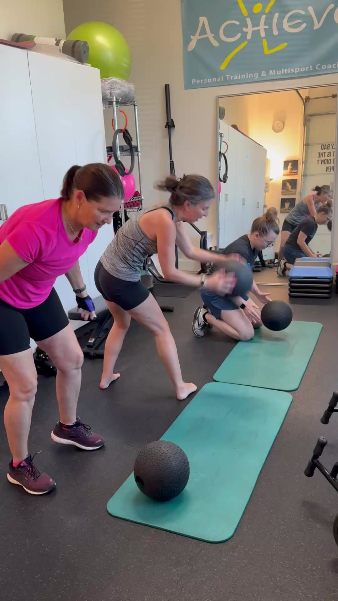

MUSCLE & METABOLISM
Women start losing muscle at age 30. By age 70, we have 35% less muscle.
GOOD NEWS: You can decrease muscle loss by 8% per decade. That increases metabolism & gives you a leaner physique.
Shannon Peterson
Specialized coaching for Perimenopause thru Post-Menopause
Hi! I'm Shannon, your perimenopause/post-menopausal Master Personal Trainer. For over 30 years, I've trained thousands of women just like you -- struggling with unwanted weight gain, fatigue, demotivation and loss of self-confidence that often starts in midlife and continues throughout the decades. And at age 54, I've personally experienced it. Women are told "that's just the way it is now", and lose hope. Wrong!

I guarantee you CAN improve body composition, lose fat, build bone density, gain lean muscle, and feel more like you again! As a 3x Ironman World Championship finisher, I know it takes more than just a cookie cutter exercise program to get results. It takes scientifically proven strategic implementation designed to optimize your
THRIVE fitness clients learn a wholistic way of training, eating, and thinking to enhance your hormonal health.
Women start losing muscle at age 30. By age 70, we have 35% less muscle.
GOOD NEWS: You can decrease muscle loss by 8% per decade. That increases metabolism & gives you a leaner physique.
Women start losing bone density at age 35. As much as 45% loss by age 85.
GOOD NEWS: Not only can you decrease future bone loss, you can still BUILD bone in menopause.
Heart Disease, Metabolic Disease & Diabetes risk all go up after menopause.
GOOD NEWS: You can decrease risk of Cardiovascular Heart Disease by 40-70% & Diabetes by 40%
Depression, Brain Fog, and Irritability are all factors of hormonal changes.
GOOD NEWS: Brain-Body neural connections improve and so does your memory, mood, anxiety & depression.
Having a trainer that "gets you" is key to your success. I've experienced the changes to my body & mind that made me question my ability to feel vibrant, strong, and like myself again. I know first hand THRIVE Women Fitness works and it's worked for thousands of woman just like you.
Train with me to take the guesswork out of working out. You don't necessarily need to train more, you just need to train smart.
Personal training that is specifically adjusted to meet your needs, not cram you into a "one size fits all" routine.
When you love what you’re doing, you do more of it!
We are a team and I’m here for you 100% of the way during your sessions and beyond.


MUSCLE: Most important determinant of healthy longevity
Workout smarter with an effective full body workout created just for you! Every new THRIVE Woman meets with me to discuss her goals and review health history to ensure a safe and effective workout each session and a plan for long term success.
30 - 45 min
Working out with other women can add another layer of fun and accountability to your fitness program! Groups are 2-4 people. You can join an existing group or create your own fitness posse!
60 min
This fast paced circuit class has it all for perimenopausal & menopausal women. Combination of heavy strength training exercises and super high intensity intervals of power-based cardio. We meet on various days of the week so please reach out if you'd like to know the options.
For busy women or those not in the NW Tucson area, Zoom is a great way to workout from the comfort of your own home. I have clients from all over the US.
This can be done as a solo session or groups up to 5 people.